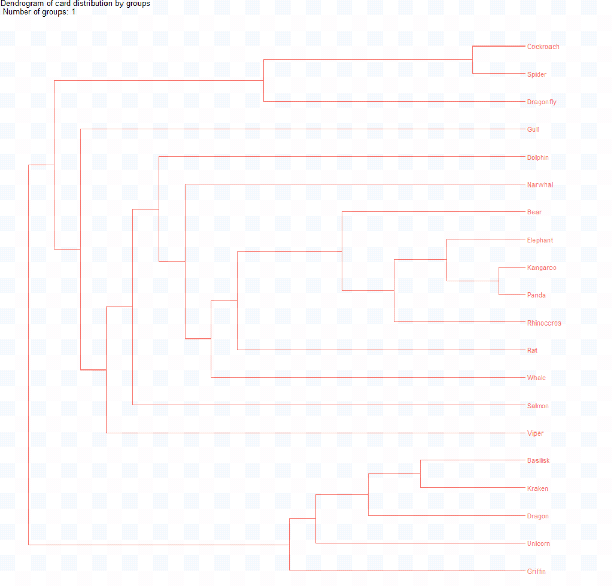
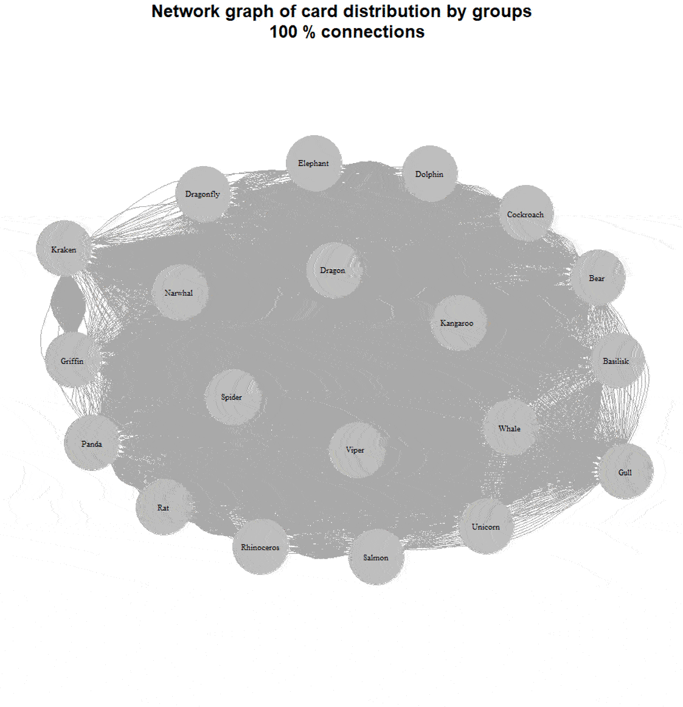

Открытая карточная сортировка — быстро обрабатываем с помощью R

Карточная сортировка — отличный способ организовать информационную архитектуру сайта или приложения. Ее несложно собирать, но с обработкой могут возникнуть проблемы. Руками полученный массив данных обрабатывать очень напряжно.
Если собирали с помощью онлайн-сервиса, то можно попробовать воспользоваться встроенными инструментами обработки, но они не всегда дают понятный результат. Мы можем часами вглядываться в таблицу соответствий и не понимать, что с ней делать. Дендрограммы уже по лучше, но не везде можно их построить, и сами они выглядят не очень понятно.
Сегодня я хотел бы поделиться простым и легким способом обработать результаты карточной сортировки таким образом, чтобы и самому не запутаться, и заказчику представить в понятном и простом виде.
Немного о карточной сортировке
Карточная сортировка — это качественно-количественный метод для поиска наиболее оптимального разделения неких сущностей на группы. Ее можно использовать, чтобы выстроить удобную навигацию в приложении, разбить товары на понятные категории.
Респонденту предлагаются карточки, которые необходимо разделить на группы. Респондент может распределить карточки по группам любым логичным для него способом.
Если у нас уже есть готовый набор групп, то сортировка называется закрытой. Если респондент сам может делать столько групп, сколько считает нужным, и называть их, то это открытая карточная сортировка.

Хорошая практика — поговорить с респондентом о том, почему он (или она) разделил карточки именно так, а не иначе. На очном исследовании это работает лучше, чем на удаленном.
Также есть обратная карточная сортировка, или же tree testing, с ее помощью можно тестировать уже готовую структуру.
В нашем случае мы будем говорить об открытой карточной сортировке.
Немного о данных, с которыми мы будем работать
Когда я думал об этой статье, я не смог найти открытых тестовых датасетов для карточной сортировки. А генерировать данные самостоятельно не очень хотелось. Поэтому я решил собрать собственный датасет, он доступен любому и каждому.

Заданием было распределить по группам 20 разных зверюшек. Я специально постарался составить карточки так, чтобы не было очевидно правильного разделения:

Получилось 107 ответов, спасибо всем, кто участвовал в сборе данных! Собранные результаты я выкачал и почистил, получилась следующая табличка:

Почти все переменные были созданы автоматически, я добавил только столбец “Group_tag” — в нем я протегировал группы на свое усмотрение по основанию классификации.
Получилось следующее распределение:

Смешанное разделение — это то, где нельзя точно определить одно основание разделения. Биологическое — это когда люди делили зверей примерно так, как мы помним по урокам биологии (например: пресмыкающиеся, птицы, млекопитающие). При этом часто респонденты при биологическом разделении часто выносили несуществующих зверей в отдельную категорию.
Анализ результатов
Для того чтобы обработать результаты, нам потребуется программа Rstudio. Она бесплатная, скачать ее можно здесь. Rstudio можно поставить как на Windows, так и на Mac.

Готовый скрипт для обработки скачиваем тут, и открываем, я постарался в нем все расписать по шагам.
Подготовка к работе
Прежде всего нам нужно поставить и запустить нужные библиотеки:

Для того чтобы запустить код, нужно выделить его и нажать ctrl+enter
После установки нам выдаст следующее сообщение:

После загрузки пакетов с командой library будет много разных предупреждений, но их можно не пугаться:

Теперь мы готовы работать с данными
Загрузка данных в Rstudio
Сначала нам нужно загрузить файл Card.xlsx, который находится тут. Файл должен находиться в отдельной папке, название папки в идеале — на латинице.
Чтобы выгрузить данные из нашей эксельки Card.xlsx мы используем следующие команды:

Rstudio предложит нам выбрать папку, где находится Card.xlsx. Далее в эту папку будут сохраняться результаты нашего анализа.

Создание таблицы совпадений
Таблица совпадений - это таблица, в которой показано, сколько раз каждая пара карточек находилась в одной группе. Чтобы создать такую табличку и сохранить ее в нашей папке, запускаем следующие команды:

Получившийся файл называется Adjacency.xlsx, давайте посмотрим, что у него внутри

В этой табличке мы видим, что, например, карточки “Гадюка” и “Василиск” находились в одной группе 9 раз, из возможных 107. Давайте немного причешем эту табличку и добавим условное форматирование в экселе:

Теперь мы уже видим больше. Например, мы легко можем заметить, что Василиск часто находится в одной группе с Драконом (92 раза из 107) и Кракеном (91 раз из 107).
Но пока непонятно, на какие группы делить и какие выводы мы можем делать.
Кластеризация (дендрограмма)
Давайте запустим следующий шаг скрипта:

И получается следуюший график:

Разберем немного поподробнее, что случилось. Алгоритм edge-betweenness поочередно удаляет те карточки, которые меньше всего связаны с другими, и это позволяет вычислить устоявшиеся группы. А дендрограмма показывает, как логичнее всего разделить карточки, если делить на определенное количество групп. Здесь мы поставили 6, но групп может быть сколько угодно, от 1 до 20 (в нашем случае, потому что карточек всего 20).

Мы уже можем делать выводы о том, как лучше всего разбить карточки, но дендрограмму все еще не очень легко считать одним взглядом, особенно если нет опыта в работе с ними.
Построение сетевого графа (визуальный анализ результатов)
Если то, что мы делали до этого, часто делают при анализе карточек, то сетевые графы встречаются довольно редко.
Про анализ карточной сортировки с помощью сетевых графов есть прекрасная статья — Analyzing Card-Sorting Data Using Graph VisualizationJUS (uxpajournal.org), но, кроме этой статьи эта визуализация почти нигде не используется.
Сетевой граф — это способ визуализации связей между сущностями. В нем каждая сущность отображается в виде точки, а связь между ними отображается как линия.

Давайте попробуем построить подобный график для наших карточек. Точками (или нодами) будут карточки, а линия — упоминание двух карточек в одной группе

В итоге у нас получается следующее:

Линии с трудом различимы, их слишком много, чтобы что-то разобрать. С этим надо что-то делать. Попробуем по аналогии с использованным нами ранее алгоритмом кластеризации, постепенно убирать связи. Это довольно просто, нам нужно отнимать число из таблицы сопряжений.

Вот например, какой график у нас выходит, если убрать 60% связей:

Теперь мы видим, что деление у нас получилось смешанное, две большие группы по месту обитания (водные и наземные), отдельно насекомые, чайка и гадюка стоят по одиночке. И в отдельной группе — все мифические существа.
Более наглядно можно посмотреть в динамике:

Облака слов
Мы разобрались с группами, но остался один момент: как их обозвать. У нас открытая карточная сортировка, респонденты сами давали группам названия. Эти данные у нас остались, их мы и будем использовать для построения облака слов для каждой группы
Например, у нас есть группа “Таракан-Паук-Стрекоза”, давайте попробуем их как-то обозвать

У нас получается вот такое облако:

И вот, мы с вами без особых проблем обработали наши результаты.
Быстрый вариант
Если не хочется делать это все по шагам, есть быстрый вариант
- Скачиваем 2 файла Cards.xlsx и CardSort3.R
- Помещаем их в одну папку
- Открываем скрипт
- Выделяем все строчки с 79 (#Начало) по 128 (#Конец)
- Жмем crtl+enter
Скрипт сам все сделает за вас: построит и сохранит таблицу совпадений, построит и сохранит дендрограммы (с разбиванием на группы от 1 до количества карточек), построит 19 сетевых графов (с 95% связей до 5% связей), и построит облака слов для каждой карточки.
Работу с быстрым вариантом я записал на видео, чтобы было нагляднее:
В заключение
Спасибо за то, что дочитали до конца, надеюсь это было интересно. Этот скрипт можно использовать для анализа проведенной самостоятельно карточной сортировки — в файл Card.xlsx просто нужно будет подставить свои данные.
Скрипт и данные можно скачать на моем гитхабе.
Если вам понравилась статья, не стесняйтесь ей делиться, пишите свои комменты и обратную связь на mail@uxrozum.com, или в telegram.